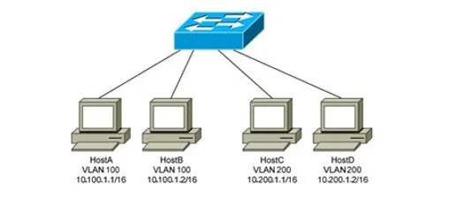

Exemplos de SDN
Alguns Exemplos de como podemos usar a SND(software-defined-networking) são:
- Fazer um projeto de redes Ethernet que permita a conexão de diversos setores dentre eles (Secretaria, Alunos e Professores), utilizando ultilizando o metodo SDN para controlar e gerenciar todas essas redes.
- Criar um projeto de segurança de rede para controle de acesso, autenticação e monitoramento de regras, de forma dinâmica.
- Escalar um projeto de rede para convergência de camadas de IoT (Internet das Coisas) e integrar nos sistemas de automação da planta, independente dos protocolos e com regras próprias.
